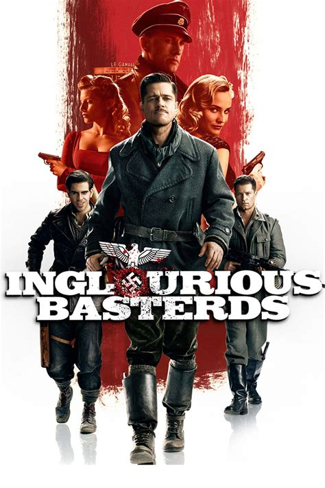

|
 |
Inglourious Basterds (2009)Directed by Quentin Tarantino 153 min · Adventure, Drama, War |
At a glance
| Official title | Inglourious Basterds |
|---|---|
| Release date | 21 August 2009 (United States) |
| Release year | 2009 |
| Original language | English, German, French, Italian |
| Country of production | United States, Germany |
| Runtime | 153 minutes |
| Genre | Adventure, Drama, War |
| Director | Quentin Tarantino |
| Screenwriter | Quentin Tarantino |
| Production companies | The Weinstein Company, Universal Pictures, A Band Apart, Studio Babelsberg |
Plot synopsis
In German-occupied France during the Second World War, a group of Jewish-American soldiers led by Lieutenant Aldo Raine sets out to strike fear into the Nazis, while a young cinema owner in Paris makes plans of her own.
Main cast
- Brad Pitt
- Christoph Waltz
- Mélanie Laurent
- Michael Fassbender
- Eli Roth
- Diane Kruger
- Daniel Brühl
- Til Schweiger
- Léa Seydoux
- August Diehl
Awards and nominations
- Won the Academy Award for Best Supporting Actor (Christoph Waltz).
- Christoph Waltz also won Best Actor at the 2009 Cannes Film Festival.
- Received 8 Academy Award nominations in total, including Best Picture, Best Director and Best Original Screenplay.
Production facts
- Premiered in competition at the 2009 Cannes Film Festival.
- Substantial portions of the dialogue are in German and French, with subtitles.
- Filmed in Germany and France, including at Studio Babelsberg near Berlin.
- Quentin Tarantino worked on the script for many years before filming.